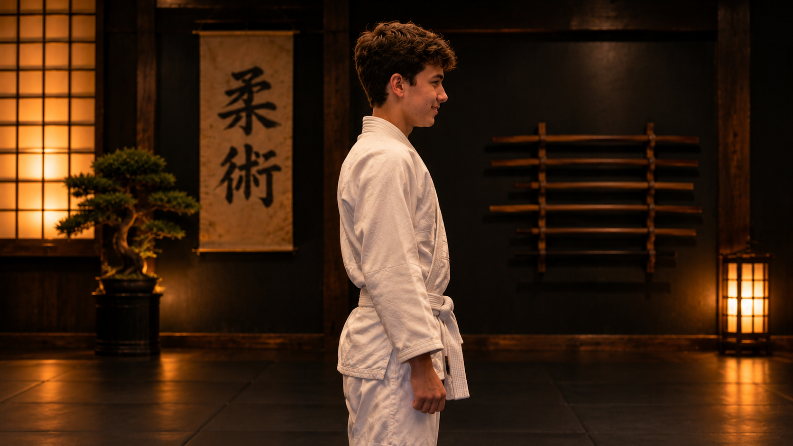
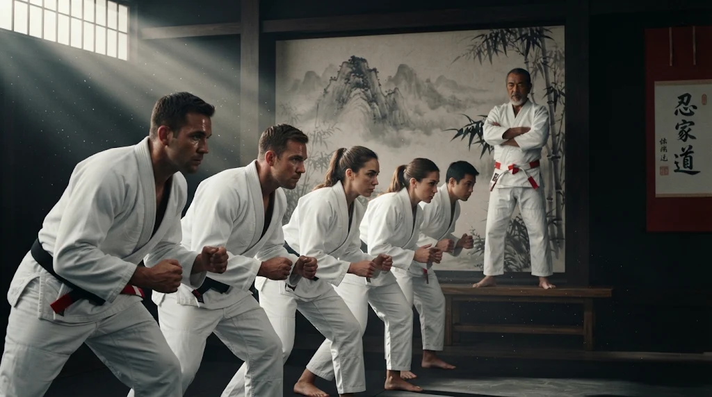
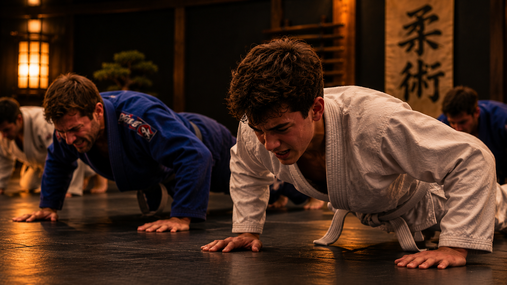

Mais do que uma luta... o Jiu-Jitsu é um caminho de disciplina e evolução constante.


O Jiu-Jitsu entrou na minha vida da forma inesperada, mas ficou por um propósito.
Ao longo do tempo, aprendi que o tatame vai muito além de técnicas e posições.
É um lugar de desafios, aprendizados e pessoas que tornam o caminho mais leve e significativo.
O Jiu-Jitsu me mostrou que o verdadeiro desafio não está no adversário, mas em mim mesmo.

Aquele primeiro contato com o tatame trouxe algo diferente. Eu não imaginava o quanto aquilo soaria vital.
FASE 01 - Descoberta
Aprendi que a constância supera o talento quando a motivação não aparece.
FASE 02 - Processo
O tatame me ensinou a lidar com o desconforto, os erros e as derrotas. Cada dificuldade é parte do aprendizado.
FASE 03 - Resiliência
Hoje, a evolução faz parte da minha rotina. Na medida do meu ritmo, na mesma rotina e a forma como encaro a vida.
FASE 04 - VidaO Jiu-Jitsu mudou a minha vida de forma inesperada, e se tornou o meu propósito.
Ao longo desse jorna, aprendi que as técnicas vão muito além de posições no tatame.
É um lugar de trocas, aprendizados e pessoas que tornam o caminho mais leve e significativo.
CONHEÇA MAIS ->